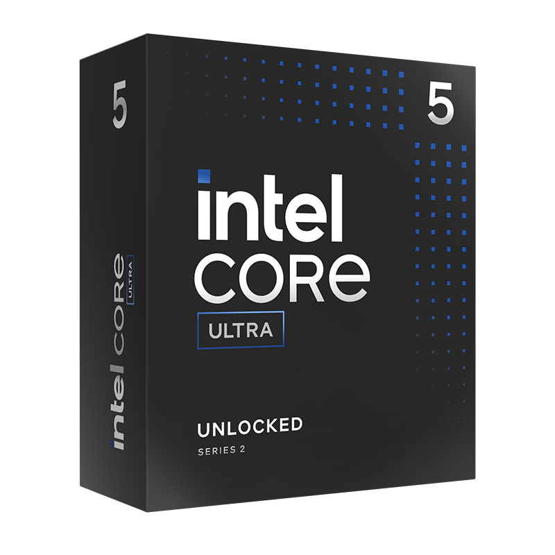
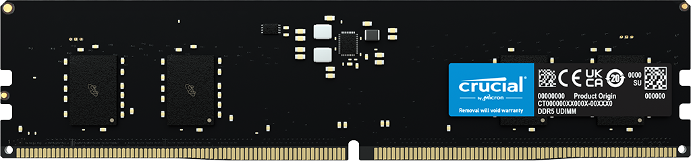
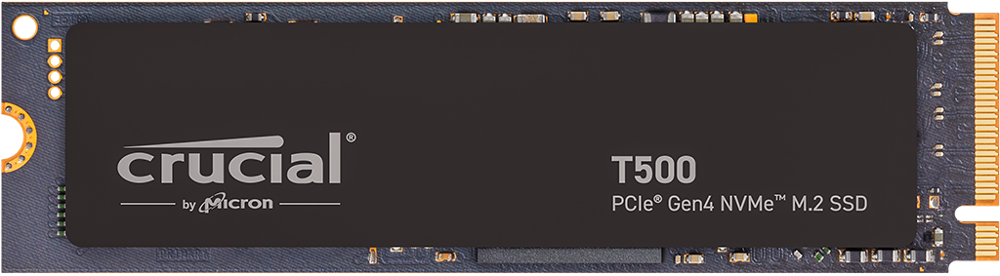
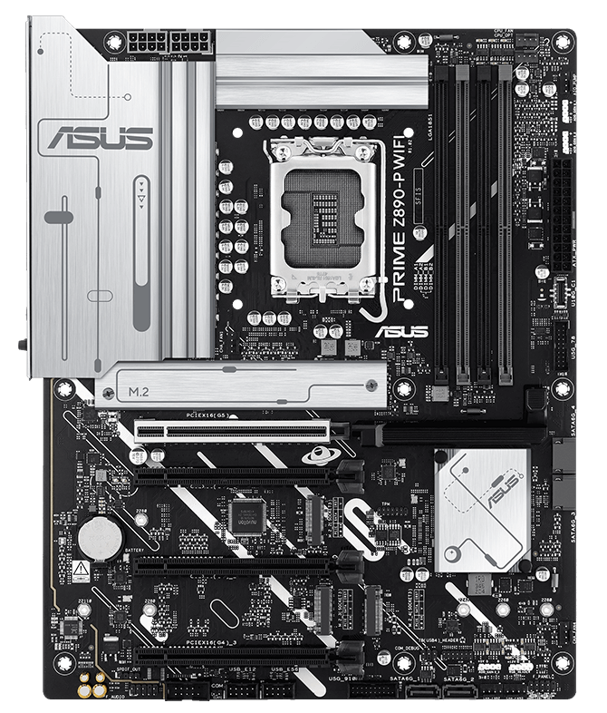
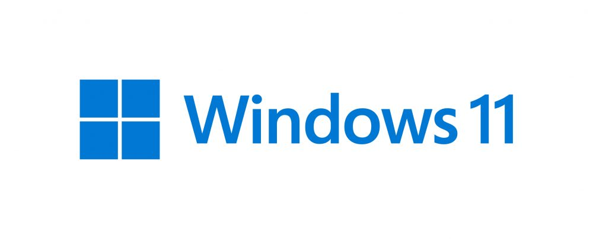

Image from : https://www.magnific.com/free-vector/computer-service-pattern_9376831.htm#fromView=keyword&page=1&position=7&uuid=64d9b9f9-0a4c-48f1-98c9-765c8ebd6bb4&track=ais_hybrid&query=Computer+parts
Computer For Family Use
This is a blog to help people who want a family shared computer, but don't know what specs, hardware, and software they need.
What does the user need? (Hardware)
What computers need :
- CPU (central processing unit)
- RAM (random access memory)
- GPU (graphic processing unit)
- Motherboard
- PSU (power supplying unit)
- Storage
- CPU cooler (not required)
There are too many variables in computer specs, so it might be hard for people with no knowledge to pick a spec. So I will offer a few recommendations.
1.CPU

Image from : https://www.canadacomputers.com/en/intel-desktop-processors/263479/intel-core-ultra-5-245k-desktop-processor-14-cores-6p-8e-lga1851-bx80768245k.html?srsltid=AYCX9vJSDDNJ5_7rwZEMs1UolZf10aP4w7A08W5iazUKH8qMf23XRuE5
What is a CPU and what does it do?
The CPU is the brain of the computer. It runs instructions provided by the software, like apps.
Intel core ultra 5 245K
- Mid range brand new CPU
- Strong enough to run most modern softwares
2.RAM

Image from : https://www.crucial.com/memory/ddr5/ct8g56c46u5
What is RAM and what does it do?
It is like a desk for the computer. If there is more space, you can spread more tasks on it.
Crucial DDR5 8x2 GB (16GB)
- Enough to run many programs at the same time
- Enough speed to support the CPU
3.Storage

Image from : https://www.crucial.com/ssd/t500/ct500t500ssd8
What is an SSD/HDD and what does it do?
SSD stores data into super small switches and has a controller which takes tracks where the data is.
HDD stores data using magnetic power. The OS(operating system) in the HDD moves the components in the HDD and lets it read and pass data.
Crucial T500 500GB PCIe Gen4
- Enough storage to start anything
- Fast speed gives no stress when using it
4.Motherboard

Image from : https://www.asus.com/microsite/motherboard/intel-ultra-series-2-arrow-lake-s-z890-h810-b860/
What is a motherboard and what does it do?
It is a large board that connects all components. A modern motherboard has a circuit called a chipset. The chipset allows components to connect and communicate with each other. It also supplies power to components too.
Asus PRIME Z890-P WIFI
- Doesn't need to buy a Wi-Fi chip to use Wi-Fi
- Strong chipset allowing to efficently connect componets
- Can pass stable power to CPU
- Multiple slots to upgrade
What does the user need? (Software)
1. Windows 11

Image from : https://news.microsoft.com/windows11-general-availability/
What is it : It is an operating system, and it allows the user to control the computer and is compatible with many software programs.
Why this : The user needs Windows 11 because the user needs an operating system to actually use their PC, and Windows 11 is a very common and stable operating system, so the user can safely use their computer.
Limitation : Needs RAM of 4GB or more, 64GB or more storage, a processor faster than 1GHz and with more than 2 cores.
Alt option : Ubuntu can be an alternative OS but is not recommended for computer beginners.
2. Google drive
Image from : https://en.wikipedia.org/wiki/Google_Drive
What is it : It is a cloud-based operating system. It allows the user to have extra storage, and it is good for backups.
Why this : The user needs Google Drive because the user needs extra storage to keep their photo safe. Able to organize many files with easy controls.
Limitation : To run Google Drive, it requires Windows 10 or a higher version of Windows. Needs to pay to expand storage.
Alt option: An alternative can be OneDrive, Dropbox, or other cloud drive service.
Some upgrade the user might want
Additional HDD or SSD
HDD :
- Usually larger capacity
- Slow read and write speed
- Weak to magnets
SSD :
- Cheaper compared to performance
- Enough capacity
NVMe SSD :
- Super fast read and write speed
- Expensive
Artificial intelligence
Copilot
Image from :https://www.cegeka.com/en/solutions/business-applications/copilot
What is it : It is an artificial intelligence in a chat app. It predicts the possibility of the next word that might come up, and has been trained many times so it can generate a natural sentence.
What it can do : May help organize data, summarize information the user might need.
Some limitation : Needs to pay to use the full version.
Recomendation :
Cyber security
Windows defender
User may face riskful situation like accessing a dangerous site or download a dangerous file.
Windows has Windows Defender as a default app, so the user can enable Windows Defender as soon as possible when they get the PC.
It has enough or more security than other free security software. It can prevent dangerous files from being downloaded and block unsafe sites.